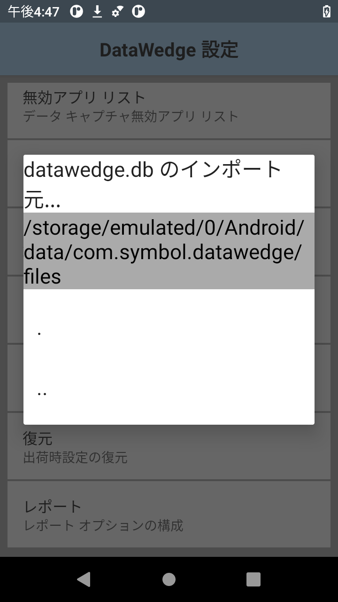

概要
このガイドでは、デバイス上の DataWedge の有効化と無効化、レポートのインポート、バックアップ/一括展開用のプロファイル ファイルや構成ファイルの管理など、DataWedge アプリの設定について説明します。プロファイルとプラグインの作成および実装については、プロファイルに関するガイドを参照してください。
DataWedge 設定
このガイドで説明している機能のほとんどは、[DataWedge 設定] パネルからアクセスできます。
[DataWedge 設定] にアクセスするには:
1.プロファイル画面で、「3 本線」メニューをタップし、下図で強調表示されている [設定] を選択します。手順 2 の図のような [DataWedge 設定] パネルが表示されます。 プロファイル画面からの [DataWedge 設定] パネルへのアクセス。
2.目的の機能をタップして呼び出すか、状態を変更します。 [DataWedge 設定] パネル
[DataWedge 設定] パネルの機能:
- DataWedge 有効 - DataWedge サービスを制御します。このチェックボックスをオフにすると、デバイス上の DataWedge が無効になり、スキャン ハードウェアの制御がシステムに戻ります。
- ロギングの有効化 - Logcat、Android Studio またはその他の互換性のあるビューアで表示可能なログを DataWedge で出力できるようになります。
- 無効なプロファイルを無視 - DataWedge のプロファイルが、有効になっていないプロファイルに切り替えられないようにします。オンにすると、プロファイルの切り替えは無視され、現在のプロファイルがアクティブのままになります。この機能を使用するには、Profile0 を無効にする必要があります。
- 無効アプリ リスト - デバイス上の任意の場所で選択したアプリやアクティビティのスキャン機能を無効にします。詳細については、こちらを参照してください。
- インポート - デバイス ストレージから DataWedge 構成ファイルをインポートするためのナビゲーションを呼び出して、現在の DataWedge 設定を置き換えます。詳細については、こちらを参照してください。
- エクスポート - 現在の DataWedge 構成をデバイス ストレージにエクスポートします。詳細については、こちらを参照してください。
- プロファイルのインポート - デバイス ストレージから DataWedge プロファイルをインポートするためのナビゲーションを呼び出します。同じ名前のプロファイルが DataWedge にすでに存在する場合、既存のプロファイルの設定は、インポートされたファイルの設定と一致するように更新されます。詳細については、こちらを参照してください。
- プロファイルのエクスポート - 個別の DataWedge プロファイルをデバイス ストレージにエクスポートします。詳細については、こちらを参照してください。
- 復元 - デバイスの DataWedge を工場出荷時のデフォルト設定に戻します。詳細については、こちらを参照してください。
ロギング
DataWedge は、システム ログ メッセージを Logcat コマンド ライン ツール、Android Studio、またはその他の互換性のあるビューアで (通常は USB 接続経由で) 表示するための出力オプションを提供しています。
ロギングを有効/無効にするには:
[DataWedge 設定] パネルで、[ロギングの有効化] をタップして、必要に応じてロギングを有効または無効にします。
無効なプロファイルを無視
この機能は、アプリで プロファイルの切り替え API を呼び出したときに、DataWedge のプロファイルが無効なプロファイルに切り替わるのを防ぎます。たとえば、スキャナを有効にしたままにするプロファイルがある場合に役立ちます。[無効なプロファイルを無視] を有効にすると、アクティビティやアプリのプロファイルが、スキャナを無効にする別のプロファイルに切り替わらなくなります。
この機能を有効にするには、Profile0 を無効にする必要があります。
[DataWedge 設定] パネルで、[無効なプロファイルを無視] をタップして、必要に応じて有効または無効にします。
アプリの無効化
DataWedge では、特定のアプリからのデータ キャプチャ サービスへのアクセスを禁止できます。これは、取得したデータが承認済みのアプリにのみ送信されるようにするためのセキュリティ対策、またはスキャナにアクセスできるアプリを制御する手段として役に立ちます。デフォルトでは、すべてのアプリがアクセスできます。
アプリのデータ キャプチャを無効にするには:
[DataWedge 設定] パネルで、[無効アプリ リスト] をタップします。
下図のような、インストールされているすべてのアプリとパッケージを示すリストが表示されます。必要に応じてスクロールして、リストに追加するアプリまたはアクティビティを 1 つまたは複数タップします。

注:
- 特定のプロファイルに関連付けられているアプリ/アクティビティを無効にすることはできません。
- 無効になっているアプリ/アクティビティをプロファイルに関連付けることはできません。
- 親パッケージを無効にすると、そのすべてのアクティビティが無効になります。
- 無効なアクティビティによって、親またはその他のアクティビティが無効になることはありません。
DataWedge の無効化
バーコード スキャン ハードウェアの制御は排他的です。DataWedge がアクティブのとき、Enterprise Browser などのアプリのスキャナ API およびバーコード API は動作しません。同様に、Enterprise Browser などのアプリでスキャン ハードウェアを制御するとき、他のアプリ (DataWedge を含む) は排除されます。したがって、デバイスのスキャナ ハードウェアを制御する方法と、必要に応じてスキャンが完了したときに制御を他のアプリに解放する方法を理解することは重要です。
DataWedge を無効にするには:
1.DataWedge を起動し、プロファイル リストに移動します (デフォルトで表示されていない場合)。
2.「3 本線」メニューをタップして、[設定] を選択します。
3.[DataWedge 有効] チェックボックスをオフにします。スキャナ ハードウェアの制御がシステムに戻ります。
プログラムで DataWedge にアクセスする方法については、「DataWedge API」を参照してください。
展開
DataWedge をセットアップしてデバイスに要求どおりに構成したら、設定をファイルに保存して手動または EMM (エンタープライズ モビリティ管理) システムを使用して他のデバイスに配布できます。DataWedge 6.5 では、エクスポートされたプロファイルの互換性が改善されました。DataWedge 6.5 以降で作成されたプロファイルは、DataWedge 6.5 以降を実行しているあらゆる Zebra デバイス モデルで機能します。詳細については、「プロファイルのエクスポート」を参照してください。
StageNow と EMM を使用したその他の展開方法については、『一括展開』ガイドを参照してください。
構成のエクスポート
デバイスの DataWedge を要望どおりにセットアップおよび構成した後は、設定ファイルのエクスポート、他のデバイスへの配布、インポート、およびアクティブ化が自動的に行われます (または手動でインポートできます)。このファイルには、プロファイル、プラグイン、およびすべての DataWedge 設定 (そのステータス (有効/無効)、ロギング、その他の構成可能なパラメータなど) が含まれています。これは、複数のプロファイルをエクスポートする場合に特に便利です。
DataWedge 構成ファイルをエクスポートするには:
1.[DataWedge 設定] パネルで、下図で強調表示されている [エクスポート] をタップします。
手順 2 のような画面が表示されます。
2.複数のストレージ デバイスが存在する場合は、目的のストレージ デバイスをタップして、[エクスポート] をタップします。ストレージ デバイスのみを選択できます。パスは自動的に挿入されます。
注:
- DataWedge 構成ファイルには、常に
datawedge.dbという名前が付けられます。 - エクスポートされた構成ファイルのデフォルト パスとファイル名:
/storage/sdcard0/Android/data/com.symbol.datawedge/files/datawedge.db - 外部 SD カードが装着されている場合は、代替パスを選択することもできます。例:
/storage/sdcard1/Android/data/com.symbol.datawedge/files/datawedge.db
3.デバイスから datawedge.db ファイルを取得し、手動またはモバイル デバイス管理 (MDM) システムにより他のデバイスに配布します。
プロファイルのエクスポート
デバイスで DataWedge プロファイルを要望どおりにセットアップおよび構成した後は、企業内の他のデバイスで使用するためにプロファイルをエクスポートおよび配布できます。これにより、企業は特定のアプリケーション用にデータの取得、操作、処理の設定を微調整して、こうした設定を組織内の他のデバイスに簡単に適用できます。
注:
- 複数のプロファイルを同時に作成、エクスポート、および配布する場合は、「構成のエクスポート」の手順に従って、プロファイルを 1 つの DataWedge 構成ファイルとしてまとめて作成およびエクスポートした方がよい場合があります。
- インポートするプロファイルと同じ名前のプロファイルがデバイスに存在する場合、既存のプロファイルは、インポートされたプロファイルによって上書きされます。
- DataWedge 6.5 以降で作成されたプロファイルは、DataWedge 6.5 以降を実行しているあらゆる Zebra デバイス モデルで機能します。詳細については、「デバイス間インポート」を参照してください。
プロファイルをエクスポートするには:
1.[DataWedge 設定] パネルで、下図で強調表示されている [プロファイルのエクスポート] をタップします。手順 2 の図のような、デバイス上のプロファイルのリストが表示されます。
2.複数のストレージ デバイスが存在する場合は、目的のストレージ デバイスをタップし、エクスポートするプロファイルの名前をタップして、[エクスポート] をタップします。ストレージ デバイスとプロファイルのみを選択できます。パスは自動的に挿入されます。
エクスポートされたプロファイルのデフォルト パスとファイル名: /storage/sdcard0/Android/data/com.symbol.datawedge/files/dwprofile_profilename.db
外部 SD カードが装着されている場合は、代替パスを選択することもできます: /storage/sdcard1/Android/data/com.symbol.datawedge/files/dwprofile_profilename.db
3.エクスポートされたファイルをデバイスから取得し、手動またはモバイル デバイス管理 (MDM) システムによって他のデバイスに配布します。
エクスポートしたファイルの名前を変更したり、データベースファイルの内容を手動で編集したりしないでください。変更すると、エラーが発生し、インポートが失敗します。
DataWedge 6.5 以降で作成されたプロファイルは、DataWedge 6.5 以降を実行しているあらゆる Zebra デバイス モデルで機能します。
構成のインポート
DataWedge 構成ファイルをインポートすることにより、DataWedge では、他のデバイス上で作成された設定を受け入れて、企業全体に配布できます。このファイルには、プロファイル、プラグイン、およびすべての DataWedge 設定 (そのステータス (有効/無効)、ロギング、その他の構成可能なパラメータなど) が含まれています。これは、複数のプロファイルをインポートする場合に特に便利です。
構成ファイルをインポートすると、デバイスに保存されているすべての DataWedge 設定とプロファイルが上書きされます。
DataWedge 構成ファイルをインポートするには:
1.[DataWedge 設定] パネル で、[インポート] をタップします。以下の手順 2 のような画面が表示されます。
2.表示されたインタフェースで、デバイス ストレージ上のインポート対象のファイルに移動します。
インポートされた設定はすぐに有効になり、以前の設定はすべて上書きされます。
DataWedge 構成ファイルには、常に datawedge.db という名前が付けられます。
詳細については、「デバイス間インポート」を参照してください。
プロファイルのインポート
プロファイルをインポートすることで、他の場所で作成した設定をデバイス上ですばやく有効にすることができます。これにより組織では、プロファイルをエクスポートして現場や企業全体に展開する前に、テスト ラボなどでプロファイルを開発して微調整することができます。詳細については、「プロファイルのエクスポート」を参照してください。
プロファイルのインポート プロセスは、構成ファイルのインポート プロセスと似ていますが、プロファイル自体は大きく異なります。プロファイルは、個別のプロファイルからの設定を 1 つにまとめたものであり、1 つ以上の特定のアプリケーションやデバイスでの DataWedge の動作を制御します。構成ファイルには、多数のプロファイルとその他の DataWedge 設定を含めることができます。
注: 複数のスキャナをサポートしていない古い DataWedge バージョン (v8.1 以前) のデバイスでは、複数のスキャナを指定して構成されたプロファイルをインポートすると、いずれかのスキャナが選択されます。
構成ファイルをインポートすると、以前のすべての DataWedge 設定とプロファイルが上書きされます。プロファイルをインポートすると、インポートされたプロファイルがデバイス上の使用可能なプロファイルのリストに追加されます。インポートするプロファイルと同じ名前のプロファイルがデバイスに存在する場合、既存のプロファイルは、インポートされたプロファイルによって変更されます。
プロファイル インポート時の重複する関連アプリ。現在のプロファイルとインポートされるプロファイルの間で、関連付けられたアプリが重複している場合、インポートされるプロファイルは有効になりません。たとえば、現在のプロファイル A が、関連付けられたアプリで構成されており、その同じアプリが、プロファイル B に関連付けられている場合、プロファイル B をインポートしても重複するため、そのインポートは有効になりません。
同様に、あるアプリが無効アプリ リストにリストされており、その同じアプリが、インポートされるプロファイルにおいて関連付けられたアプリである場合にも、これが当てはまります。つまり、インポートは有効にならず、そのアプリは無効アプリ リストに残ります。
DataWedge プロファイルをインポートするには:
1.[DataWedge 設定] パネルで、下図で強調表示されている [プロファイルのインポート] をタップします。手順 2 のような画面が表示されます。
2.表示されたインタフェースで、デバイス ストレージからインポート対象のファイルに移動します。警告: インポートするプロファイルと同じ名前のプロファイルがデバイスに存在する場合、既存のプロファイルは、インポートされたプロファイルによって変更されます。
DataWedge プロファイルの命名規則: (dwprofile_<profilename>.db)。
デバイス間インポート
DataWedge 6.5 以降のデバイスからエクスポートされたプロファイルおよび構成ファイルは、ソース デバイスとターゲット デバイスでスキャン周辺機器やイメージング周辺機器が異なる場合でも、DataWedge 6.5 以降を実行している他のデバイスにインポートできます。ハードウェアの違いに対応するために、DataWedge 6.5 (以降) には、以下のユーザーインタフェースの変更が実装されています。
周辺機器が存在せず、[自動を使用] が選択されている
元のデバイスで選択したスキャナがターゲット デバイスでサポートされていなくても、[自動を使用] が選択されていれば (下図を参照)、最初にソース スキャン デバイス用に構成された入力設定 (デコーダ パラメータなど) がターゲット デバイスの自動的に選択された周辺機器に適用されます。
[自動を使用] が選択されている
周辺機器が存在せず、「自動を使用」が選択されていない
ソース プロファイルが、ターゲット デバイスでサポートされていないスキャナ用に構成されている場合、そのプロファイルのスキャナを選択すると、下図のようなダイアログが表示されます。たとえば、Zebra TC75 にはカメラが搭載されていますが、TC51 には搭載されていません。TC75 で作成した、カメラ用に構成したプロファイルを TC51 にインポートした場合、以下のようなメッセージが表示され、スキャン用の周辺機器を選択するように求められます。選択後、最初にソース スキャン デバイス用に構成された入力設定 (デコーダ パラメータなど) が、ターゲット デバイスの手動で選択した周辺機器に適用されます。
[自動を使用] が選択されていない
DataWedge 6.4 以前からの変換
DataWedge では、デバイスを DataWedge 6.5 以降にアップグレードして、ファイルを (必要に応じて) インポートしてエクスポートすることで、バージョン 6.5 より前の DataWedge が搭載されているデバイスに存在する (またはそのデバイスで作成された) 構成ファイルとプロファイルを変換できます。これは、KitKat を実行しているデバイスにのみ該当します。Marshmallow 以降を実行しているデバイスには、すでに DataWedge 6.5 以降が搭載されています。
重要: ファイルを変換するためにアップグレードするデバイスは、元のファイルを作成したデバイスと同じモデルのデバイスである必要があります。たとえば、TC70 で、古いバージョンの DataWedge で作成したプロファイルは、TC70 で実行されている DataWedge 6.5 以降にインポートする必要があります。
復元 (デフォルト)
DataWedge には、ユーザーが構成したすべての設定をリセットして、工場出荷時のデフォルト設定に戻す機能があります。注意: このアクションは元に戻せません。
この機能は、構成の復元 API を使用して実行することもできます。
DataWedge を工場出荷時のデフォルト設定に復元するには:
1.[DataWedge 設定] パネルで、下図で強調表示されている [復元] をタップします。手順 2 の図のような確認画面が表示されます。
2.[はい] をタップして工場出荷時のデフォルト設定に戻します (キャンセルするには、[いいえ] をタップします)。
enterprise フォルダ
Zebra デバイスの内部ストレージには、デバイスでエンタープライズ リセットを実行した後も存続する (消去されない) /enterprise という名前のディレクトリが含まれています。DataWedge のファイルは、/enterprise の下のいくつかのディレクトリに格納されます。これにより、そうしたファイルはエンタープライズ リセット後も保持されます。
ディレクトリの動作:
/enterprise/device/settings/datawedge/enterprisereset/- エンタープライズ リセット後にこのフォルダがチェックされ、構成ファイルや存在するプロファイルがインポートされます。/enterprise/device/settings/datawedge/autoimport- 実行中に常にこのフォルダが監視され、ここに配置されている構成ファイルがただちにインポートされてアクティブになり、以前の設定が上書きされます。この後の「自動インポート」を参照してください。
注:
- DataWedge の復元操作では、作業中の .db ファイルが削除されます。
- 工場出荷時の状態にリセットすると、
/enterpriseフォルダ内のすべてのファイルが削除されます。 - /
/enterpriseresetディレクトリにdatawedge.dbファイルが存在する場合、そのファイルは、正常に機能する新しい構成ファイルとしてアクティブになります。
自動インポート
DataWedge では、市販のサードパーティ製モバイル デバイス管理 (MDM) システムを介した、デバイスへの構成ファイル (datawedge.db) とプロファイル (dwprofile_profilename.db) のリモート展開をサポートしています。DataWedge の起動時には、そのようなファイルが /enterprise/device/settings/datawedge/autoimport ディレクトリに存在するかどうかがチェックされます。見つかった場合は、以下の機能を実行します。
DataWedge 自動インポート ルーチン:
- 新しいファイルをインポートします
- 既存の構成ファイルおよび同じ名前のプロファイル (存在する場合) を置き換えます
- インポートしたファイルを削除します
- 新しい設定をただちに有効になります
DataWedge が実行中の場合は、構成ファイルまたはプロファイルが /autoimport フォルダに配置されるたびに、DataWedge でシステム通知を受信し、同じ 4 つの機能を実行します。
重要な注意事項:
- 最適な結果を得るためにも、新しい構成ファイルをリモート展開する前に、DataWedge 構成 UI 画面を終了することを強くお勧めします。
- Android KitKat 以降を実行しているデバイスでは、
/enterpriseフォルダは、ファイル エクスプローラやその他のユーザーレベルのツールで表示することはできません。/autoimportフォルダまたは/enterpriseresetフォルダへの構成ファイルの移動およびそれらのフォルダからの構成ファイルの移動は、プログラムで行うか、ステージング クライアント アプリまたは MDM を使用して行う必要があります。 - バージョン 6.9 より前の DataWedge で、監視対象の “.db” ファイルが
/autoimportフォルダに現れた直後にそれを使おうとしました。このため、ファイルが完全に書き込まれる前に、それを使おうとする可能性があります。これを回避するには、まず代わりとなる拡張子 (「.tmp」など) でファイルを保存し、書き込みが完了したら拡張子を .db に変更することをお勧めします。 - DataWedge のファイル操作手順が妨げられることがないように、すべての .db ファイルに明示的なファイル権限を適用することをお勧めします。
レポート作成 (廃止)
DataWedge 6.6 以降では、デバイスのプロファイルのインポート結果を報告できます。こうした HTML レポートには、元の (ソース) データベースと対象の (ターゲット) デバイスの設定の違いが表示されます。これにより、管理者は、違いを簡単に特定して、デバイス間のハードウェアまたはソフトウェア機能の相違を補正するための調整を行うことができます。レポートでは、受け入れる設定ファイルを比較する基準として、常にターゲット デバイスが使用されます。
◦ スキャナの列挙 - デバイスで使用できるスキャナのインデックスを生成します。
◦ 構成の取得 - 「PARAM_LIST」設定またはサポートされているパラメータを、指定したプロファイルから取得して、値ペアのセットまたはプラグイン構成バンドルとして返します。サンプル コードについては、「サポートされているバーコード パラメータの取得」を参照してください。
DataWedge 6.6 で追加されたレポート。
[レポート] パネルの機能:
- レポート作成が有効 - インポート操作後のレポート作成を有効または無効にするのに使用します。デフォルトでは無効です。以下の注記を参照してください。
- レポートの作成対象 - 手動インポートのみ、自動インポートのみ、またはその両方のレポートを作成できます。
- 手動インポートの後にレポートを表示 - デバイスのデフォルト ブラウザを使用して作成されたレポートを表示します。手動インポートでのみサポートされています。
注: レポート機能が有効になっているデータベース ファイル全体をインポートする前に DataWedge で [レポート] が無効になっている場合、操作後に DataWedge で [レポート] が有効になります。
この機能のパラメータは、レポート オプションの設定 API を使用して構成できます。
ファイルの名前と場所
ファイル名が常に同じファイル:
datawedge.db- インポート対象の (エクスポートされた) DataWedge 構成データベースdw_report_for_full_config.html-datawedge.dbのインポート後に作成されたレポート
ファイル名がプロファイル名に対応しているファイル:
dwprofile_<profile_name>.db- インポート対象の (エクスポートされた) 個別のプロファイルdw_report_for_profile_<profile_name>.html- プロファイルdwprofile_<profile_name>.dbのインポート後に作成されたレポート
ファイルが通常配置されているデバイス ディレクトリ:
/Android/data/com.symbol.datawedge/files
レポート パラメータ
DataWedge レポートでは、現在、以下のパラメータ カテゴリがサポートされています。
- DECODER
- DECODER_PARAMS
- READER_PARAMS
- SCAN_PARAMS
- UDI_PARAMS
- UPCEAN_PARAMS
レポート形式
レポート情報は、datawedge.db ファイル全体をインポートする場合とプロファイル固有の dwprofile_<profile_name>.db ファイルをインポートする場合で多少異なります。いずれかのファイル タイプをインポートすると、以下のようなサマリが生成されます。最後の 2 つのフィールドには、ファイル タイプに固有の情報が表示されます。

サマリの項目、データベース全体のインポート:
- DataWedge バージョン - ターゲット デバイスにインストールされているバージョン。
- ソース DataWedge バージョン - ソース デバイスにインストールされており、インポートされたファイルの作成に使用されたバージョン。
- 現在のデバイス - レポートを作成したデバイスのモデル。
- ソース デバイス - インポートされたデータベースを作成したデバイスのモデル。
- インポート日時 - インポート操作の日時。
- インポート モード - インポートが手動と自動のどちらだったかを示します。
- 構成ファイル - インポートされたデータベース ファイルの完全修飾パス。
- DataWedge 有効* - インポート操作後の DataWedge のステータスを報告します。
- DataWedge ロギング* - インポート操作後の DataWedge ロギングのステータスを報告します。
* このフィールドは、プロファイル データベース レポートによって異なります。
サマリの項目、プロファイル データベースのインポート:
- DataWedge バージョン - ターゲット デバイスにインストールされているバージョン。
- ソース DataWedge バージョン - ソース デバイスにインストールされており、インポートされたファイルの作成に使用されたバージョン。
- 現在のデバイス - レポートを作成したデバイスのモデル。
- ソース デバイス - インポートされたデータベースを作成したデバイスのモデル。
- インポート日時 - インポート操作の日時。
- インポート モード - インポートが手動と自動のどちらだったかを示します。
- 構成ファイル - インポートされたデータベース ファイルの完全修飾パス。
- プロファイル名* - インポートされたプロファイルの名前を示します。
- プロファイル有効* - インポート操作後のインポートされたプロファイルのステータスを報告します。
* このフィールドは、データベース全体レポートで異なります。
プロファイルのサマリ
データベース全体のインポートには、任意の数の個別のプロファイルを含めることができます。データベース全体のインポートのレポートには、下図のようなインポートされたプロファイルのリストが含まれます。プロファイル名をタップすると、そのプロファイルのレポートが表示されます。個別のプロファイルをインポートする場合、[プロファイルのサマリ] には 1 つのエントリが含まれます。

プロファイル レポート
インポートされたプロファイルごとに作成されるレポートは、そのプロファイル用に現在選択されているスキャナを示し、またプラグインが有効になっているかどうか、および選択したデバイスがサポートされていない場合に別のスキャン デバイスを自動的に選択するように設定されているかどうかを示します (詳細については、「デバイス間インポート」を参照してください)。

影響を受けるパラメータ - このセクションには、ソース データベースとターゲット データベースで異なる値を含むパラメータが表示されます。上図のレポートの例は、そのような 4 つのパラメータ (デコーダ パラメータが 2 つ、リーダー パラメータとスキャン パラメータが 1 つずつ) を示しています。
変更されていないパラメータ - このセクションには、デフォルト値から変更されているけれども、ターゲット デバイスで引き続き適用可能な、インポートされたファイルからの値を含むパラメータが表示されます。
注: ソース デバイスでデフォルト状態のままになっている設定は、適用できない場合またはターゲットでのデフォルト値が異なっている場合を除き、報告されません。
スキャナ パラメータのサマリ
このセクションでは、現在のデバイスでサポートされているスキャナと、インポートされたすべてのパラメータに対する各スキャナの適合性を示します。このサマリの下には、サポートされている各スキャナのセクションが表示されます。ここには、サポートされていないパラメータ、既存のパラメータのデフォルト設定に対する変更、および新しいパラメータとその設定が表示されます。

サポートされていないパラメータ - ソース デバイスからエクスポートされ、ターゲット デバイスで認識されないパラメータです。
デフォルトが変更されたパラメータ - 両方のデバイスでサポートされているけれども、デフォルト値が異なるパラメータです。
新規パラメータ - 現在のデバイスでサポートされているけれども、ソース デバイスでは見つからない、またはサポートされていないパラメータです。
ユーザー通知
ユーザー通知は、1 つ以上のインポートされた設定において、対応する設定がターゲット デバイスにない場合に表示されます。たとえば、下図のレポートには、インポートされたデータベースにはあるけれども、ターゲット デバイスにはない (またはターゲット デバイスで一度も構成されていない) 3 つのスキャナが表示されています。
 ユーザー通知の例
ユーザー通知の例
注: DataWedge 6.6.5 より前のバージョンで作成されたデータベースをインポートした場合は、ソース情報がないため、インポート時に "不完全なレポート" が生成されます。
この機能のパラメータは、レポート オプションの設定 API を使用して構成できます。
インポート コードの例
次のサンプル Java コードは、個々のニーズに合わせて変更できます。
//NOTE: This Java code for demo purposes only; it should not be used without testing.
InputStream fis = null;
FileOutputStream fos = null;
String autoImportDir = "/enterprise/device/settings/datawedge/autoimport/";
String outputFileName = "datawedge.db";
try {
// Open the db as the input stream
fis = context.getAssets().open("datawedge.db");
}
catch (IOException ex)
{
Log.e("DEMO",ex.getMessage());
}
// create a File object for the parent directory
File outputDirectory = new File(autoImportDir);
// create a temporary File object for the output file
File outputFile = new File(outputDirectory,outputFileName);
// attach the OutputStream to the file object
try {
fos = new FileOutputStream(outputFile);
}catch (FileNotFoundException ex){
Log.e("DEMO",ex.getMessage());
}
// transfer bytes from the input file to the output file
byte[] buffer = new byte[1024];
int length;
int tot = 0;
try {
while ((length = fis.read(buffer)) > 0) {
fos.write(buffer, 0, length);
tot += length;
}
}
catch (IOException ex){
Log.e("DEMO",ex.getMessage());
}
Log.d("DEMO",tot+" bytes copied");
//flush the buffers
try {
fos.flush();
}
catch (IOException ex)
{
Log.e("DEMO",ex.getMessage());
}
//release resources
try {
fos.close();
}catch (Exception e){
}finally {
fos = null;
//set permission to the file to read, write and exec.
outputFile.setExecutable(true, false);
outputFile.setReadable(true, false);
outputFile.setWritable(true, false);
}